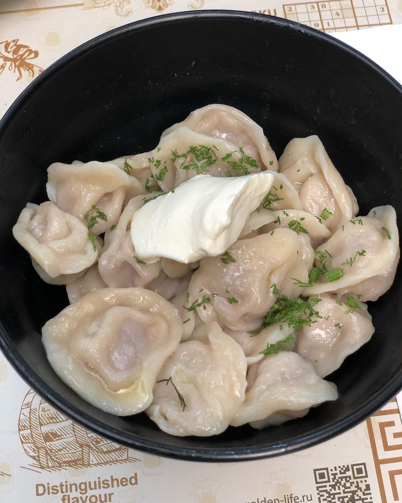
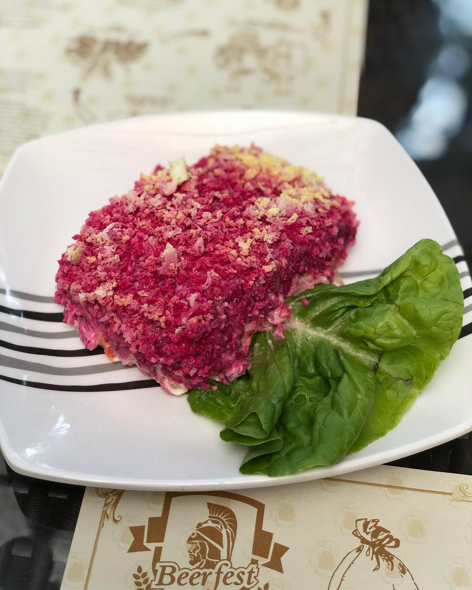

Happy kid - eating Russian pelmeni (dumplings) and famous salad - herring under fur coat 😋🤤 dishes that didn’t make to this post: soup solyanka, rye bread and Russian crepes - they were too delicious, we were too hungry 😄 it’s really rare to find good Russian food in Singapore (until you cook it yourself 😉) - thank you @beerfest_singapore, it was delicious 👌🏼 — #russianfood #pelmeni #herringunderafurcoat
2019-02-04 00:34:31
Back to main page